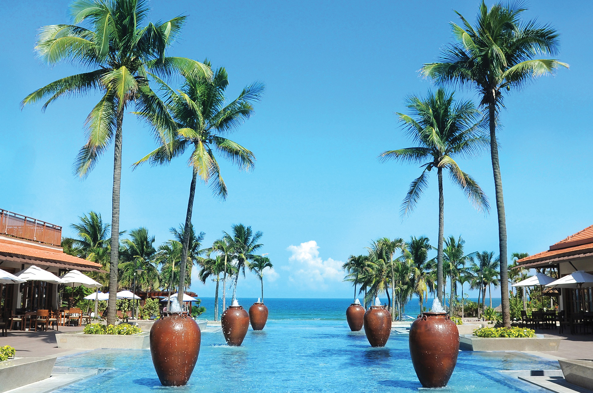
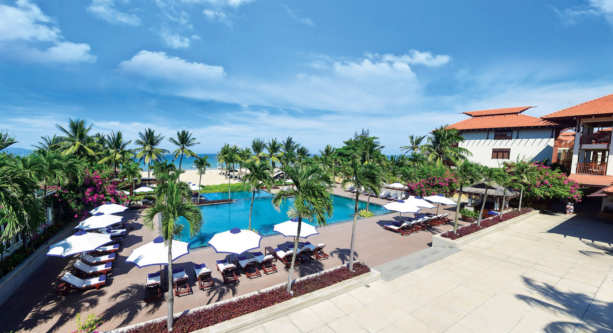

Facing the white sandy beach of Da Nang, Furama Resort Danang is the gateway to 3 world cultural heritages: Hoi An (20 minutes), My Son (90 minutes) and Hue (2 hours, 196 rooms. Villas from two to four bedrooms with private pools are tastefully decorated, in traditional Vietnamese design style and French colonial architecture, making Furama a prestigious resort in Vietnam - honor attended to welcome many celebrities, royalty, politicians, movie stars and international business leaders.

The resort’s culinary experience features a mixture of the authentic and locally inspired Vietnamese, Asian, Italian and other European cuisines plus the best imported steaks. The resort presents guests with varied gastronomic venues – the hip and breezy bar overlooking the beach, the exclusive Lagoon pool surrounded by a tropical garden, the true Italian flare offered at the Don Cipriani’s, the refined Asian touch at Café Indochine or the authentic central Vietnam cuisine at the Danaksara.
A well-appointed International Convention Palace with ballrooms can accommodate up to 1,000 people in style, with another ten function rooms for 50 to 300 people each. A variety of cultural-themed parties on the beach or around the lagoon, in the ballrooms or outside the resort, with the surprising arrivals of VIPs from Helicopter landing on the resort’s own Helipad…


A full range of Water Sports will keep you busy. Stop by the Water Sport House where our experienced staff are waiting to assist or train you in the use of any of our equipment.